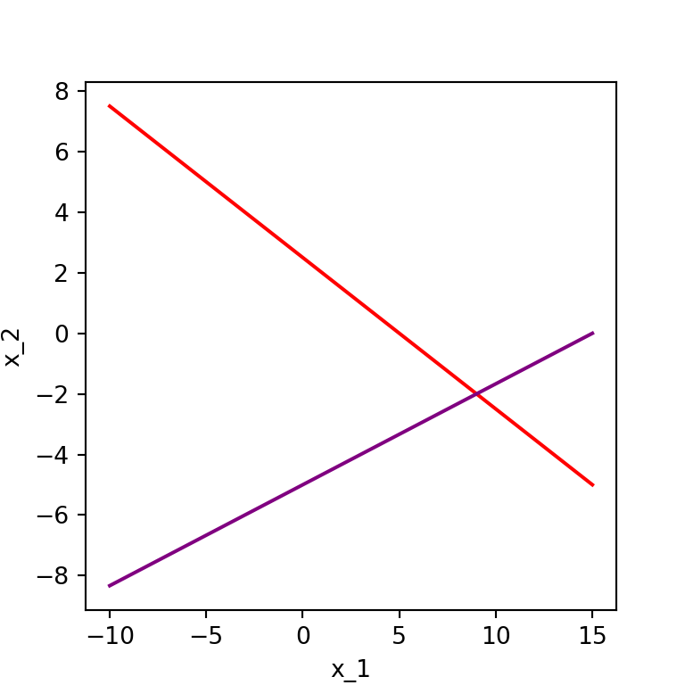
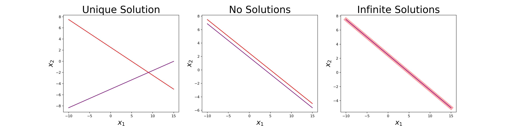
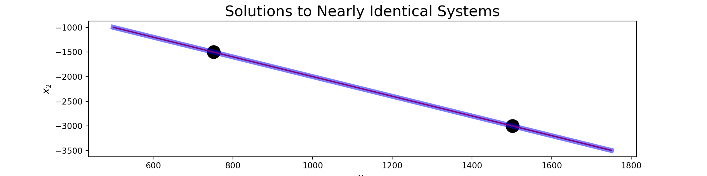

December 26, 2025
You probably remember being asked to solve systems like: \(\left\{\begin{array}{rcl} 2x_1 + 4x_2 &= & 10\\ x_1 - 3x_2 &= & 15\end{array}\right.\) in previous math courses.
As a reminder, the solution to such a system in two variables corresponds to a point of intersection between two straight lines. See the image to the right.

We can see that the system \(\left\{\begin{array}{rcl} 2x_1 + 4x_2 &= & 10\\ x_1 - 3x_2 &= & 15\end{array}\right.\) has a single solution from the plot. You may also remember that systems can also have no solutions or infinitely many solutions. For example, the system \(\left\{\begin{array}{rcl} 2x_1 + 4x_2 &= & 10\\ 4x_1 +8x_2 &= & 15\end{array}\right.\) has no solutions, and the system \(\left\{\begin{array}{rcl} 2x_1 + 4x_2 &= & 10\\ -4x_1 - 8x_2 &= & -20\end{array}\right.\) has infinitely many solutions, as can be seen in the middle and right plot respectively below.

In the rightmost plot above, one of the lines is made artificially thick to show that both lines agree at all \(\left(x_1, x_2\right)\) satisfying either equation.
From Linear Algebra, we remember that we can efficiently solve linear systems by reducing an augmented coefficient matrix.
As a reminder, a system like the one we began with \(\left\{\begin{array}{rcl} 2x_1 + 4x_2 &= & 10\\ x_1 - 3x_2 &= & 15\end{array}\right.\) can be described via matrix multiplication as
\[\left[\begin{array}{cc} 2 & 4\\ 1 & - 3\end{array}\right]\cdot\left[\begin{array}{c} x_1\\ x_2\end{array}\right] = \left[\begin{array}{c}10\\ 15\end{array}\right]\]
The corresponding augmented coefficient matrix is of the form: \(\left[\begin{array}{cc|c} 2 & 4 & 10\\ 1 & -3 & 15\end{array}\right]\)
To solve the system, we row-reduce to row echelon form, identify the pivots, and either solve via back-substitution or completely reduce to reduced row echelon form and read the solutionsfrom the reduced matrix.
We’ll walk through a slightly larger example shortly.
Before we move to an example, its worth considering some common matrix forms that will motivate some of our future work.
In Gauss-Jordan elimination, we have the solution to the system just by reading the resulting augmented coefficient matrix.
In Gaussian elimination, we can obtain the solution to the system by using backward substitution – avoiding several row reduction steps in favor of a little algebra.
In LU decomposition, we can obtain the solution to the system by first using backward substitution and then forward substitution.
The method of Gaussian Elimination involves converting the matrix equation \(A\vec{x} = \vec{b}\) into \(U\vec{x} = \vec{c}\) and then using backward elimination to solve the equivalent upper-triangular system.
This technique is appropriate when working with linear systems, matrix equations, and vector equations.
\[\left\{\begin{array}{ccccccccc} A_{11}x_1 & + & A_{12}x_2 & + & \cdots & + & A_{1n}x_n & = & b_1\\ A_{21}x_1 & + & A_{22}x_2 & + & \cdots & + & A_{2n}x_n & = & b_2\\ \vdots & & & & & & & \vdots\\ A_{n1}x_1 & + & A_{n2}x_2 & + & \cdots & + & A_{nn}x_n & = & b_n \end{array}\right.~~~~~~~~~~\left[\begin{array}{cccc} A_{11} & A_{12} & \cdots & A_{1n}\\ A_{21} & A_{22} & \cdots & A_{2n}\\ \vdots & \vdots & \ddots & \vdots\\ A_{n1} & A_{n2} & \cdots & A_{nn}\end{array}\right]\cdot\left[\begin{array}{c} x_1\\ x_2\\ \vdots\\ x_{n}\end{array}\right] = \left[\begin{array}{c} b_1\\ b_2\\ \vdots\\ b_{n}\end{array}\right]~~~~~~~x_1\begin{bmatrix} A_{11}\\ A_{21}\\ \vdots\\ A_{n1}\end{bmatrix} + x_2\begin{bmatrix} A_{12}\\ A_{22}\\ \vdots\\ A_{n2}\end{bmatrix} + \cdots + x_n\begin{bmatrix} A_{1n}\\ A_{2n}\\ \vdots\\ A_{nn}\end{bmatrix} = \begin{bmatrix} b_1\\ b_2\\ \vdots\\ b_n\end{bmatrix}\]
Each of the above equations is associated with the augmented matrix
\[\left[\begin{array}{cccc|c} A_{11} & A_{12} & \cdots & A_{n1} & b_1\\ A_{21} & A_{22} & \cdots & A_{2n} & b_2\\ \vdots & \vdots & \ddots & \vdots & \vdots\\ A_{n1} & A_{n2} & \cdots & A_{nn} & b_n\end{array}\right]\]
A [square] system of linear equations has a unique solution if the coefficient matrix is non-singular.
If a linear system has no solutions, then we say it is and inconsistent system.
Linear systems with one or infinitely many solutions are said to be consistent systems.
In summary, if \(\left|A\right| = 0\) then the system may be either inconsistent or have infinitely many solutions and if \(\left|A\right| \neq 0\),then the system is consistent and has a unique solution.
Example: Compute the determinant for the matrix \(A = \left[\begin{array}{ccc} 3.2 & 4.7 & -0.8\\
6.2 & -13 & 8.2\\
2.1 & -0.6 & 1.1\end{array}\right]\). You may utilize the .det() method from {numpy}’s linalg sub-module. What does this mean about solutions to \(A\vec{x} = \vec{b}\) for any \(\vec{b}\)?
We’ve seen that symbolic mathematics and computational mathematics are not exactly identical.
0.1 + 0.2 == 0.3 returned a result of False.Example: Consider the following linear equations: (i) \(\left\{\begin{array}{lcl} 2x_1 + x_2 & = & 3\\ 2x_1 + 1.001x_2 & = & 0\end{array}\right.\) and \(\left\{\begin{array}{lcl} 2x_1 + x_2 & = & 3\\ 2x_1 + 1.002x_2 & = & 0\end{array}\right.\). The first system has solution \(\boxed{~x_1 = 1501.5,~x_2 = -3000~}\) but the second system has solution \(\boxed{~x_1 = 751.5,~x_2 = -1500~}\). A \(0.1\%\) change in one of the coefficients produced a \(100\%\) change in the solution.

When such small changes (perhaps rounding errors) can lead to such drastic changes in a solution, we need to be worried that our numerical techniques may produce untrustowrthy results.
For the system \(\left\{\begin{array}{lcl} 2x_1 + x_2 & = & 3\\ 2x_1 + 1.001x_2 & = & 0\end{array}\right.\), the determinant of the coefficient matrix is:
\[\begin{align*} \det\left(\begin{array}{cc} 2 & 1\\ 2 & 1.001\end{array}\right) &= 2\left(1.001\right) - 1\left(2\right)\\ &= 2.002 - 2\\ &= 0.002 \end{align*}\]
This determinant is close to \(0\) and is on a much smaller scale than the coefficients of the system. We’ll use this as a rule of thumb.
Rule of Thumb (Conditioning): If \(\det\left(A\right)\) is much smaller than the magnitudes of the individual elements in the matrix, then the coefficient matrix \(A\) is said to be ill-conditioned.
This rule of thumb is more convenient to follow than by using a conditioning number for a matrix since the conditioning number is expensive to compute for large matrices. For completeness, the definition of a conditioning number on a matrix appears on the next slide.
Definition (Matrix Condition Number): Given an invertible matrix \(A\), the condition number is denoted by \(\text{cond}\left(A\right)\) and is computed as \(\text{cond}\left(A\right) = \|A\|\cdot\|A^{-1}\|\). If \(A\) is a non-invertible matrix, then its condition number is defined to be \(\infty\).
In the definition above, \(\|M\|\) denotes a norm of the matrix \(M\). Common norms are…
Given that there are different choices for matrix norm, the condition number of a matrix is dependent on the chosen norm. This is another reason that we choose to proceed with our rule of thumb instead of insisting on using the condition number for our coefficient matrix.
Example (Conditioning): Evaluate the determinant and use the result to determine whether the corresponding matrix is singular, ill-conditioned, or well-conditioned. Compute the determinant by hand and then use np.linalg.inv() to compute the inverse of the matrix and verify your results.
\[B = \left[\begin{array}{rrr} 4 & -2 & 0\\ -2 & 4 & -2\\ 0 & -2 & 4\end{array}\right]\]
Rule of Thumb Reminder: If \(\det\left(A\right)\) is much smaller than the entries of \(A\), then \(A\) is ill-conditioned.
Formal Conditioning: The condition number of the matrix \(A\) is \(\text{cond}\left(A\right) = \|A\|\cdot\|A^{-1}\|\). If \(A\) is a non-invertible matrix, then its condition number is defined to be \(\infty\).
Smaller condition numbers indicate greater suitability for numerical methods.
Consider \(\left\{\begin{array}{lcl} 4x_1 - 2x_2 + x_3 & = & 11\\ -2x_1 + 4x_2 - 2x_3 & = & -16\\ x_1 - 2x_2 + 4x_3 & = & 17\end{array}\right.\)
Complete the following:
Consider \(\left\{\begin{array}{lcl} 4x_1 - 2x_2 + x_3 & = & 11\\ -2x_1 + 4x_2 - 2x_3 & = & -16\\ x_1 - 2x_2 + 4x_3 & = & 17\end{array}\right.\)
Note: \(\det\left(A\right) = 0\) if and only if \(\det\left(U\right) = 0\), although generally \(\det\left(A\right) \neq \det\left(U\right)\). This is a nice property, since \(\det\left(U\right)\) is much easier to compute than \(\det\left(A\right)\).
Comment: When making a row operation of the form \(R_{i} \leftarrow R_i + \lambda R_j\), we call \(R_j\) the pivot row.
Complete the following:
Omitted for now…
We’ll derive and implement the Gaussian Elimination algorithm by picking apart our “by hand” approach to solving the previous system.
The algorithm will come in two phases.
Consider that the first \(k-1\) rows of the augmented coefficient matrix have already been converted to upper triangular form:
\[\left[\begin{array}{ccccccccc|c} A_{11} & A_{12} & A_{13} & \cdots & A_{1k} & \cdots & A_{1j} & \cdots & A_{1n} & b_1\\ 0 & A_{22} & A_{23} & \cdots & A_{2k} & \cdots & A_{2j} & \cdots & A_{2n} & b_2\\ 0 & 0 & A_{33} & \cdots & A_{3k} & \cdots & A_{3j} & \cdots & A_{3n} & b_3\\ \vdots & \vdots & \vdots & & \vdots & & \vdots & & \vdots & \vdots\\ 0 & 0 & 0 & \cdots & A_{kk} & \cdots & A_{kj} & \cdots & A_{kn} & b_k\\ \vdots & \vdots & \vdots & & \vdots & & \vdots & & \vdots & \vdots\\ 0 & 0 & 0 & \cdots & A_{ik} & \cdots & A_{ij} & \cdots & A_{in} & b_i\\ \vdots & \vdots & \vdots & & \vdots & & \vdots & & \vdots & \vdots\\ 0 & 0 & 0 & \cdots & A_{nk} & \cdots & A_{nj} & \cdots & A_{nn} & b_n\end{array}\right]\]
The \(i^{th}\) row is the current row to be transformed
\[R_i \leftarrow R_i - \frac{A_{ik}}{A_{kk}}R_k\]
Resulting in the following changes:
\[\begin{align*} A_{ij} &\leftarrow A_{ij} - \frac{A_{ik}}{A_{kk}}A_{kj} \text{, for}~j = k, k+1, \cdots, n \\ b_i &\leftarrow b_i - \frac{A_{ik}}{A_{kk}}b_k \end{align*}\]
Remembering that python starts indexing from 0, this is to be done for \(k = 0, 1, \cdots, n - 2\) and \(i = k + 1, k + 2, \cdots, n - 1\).
#elimination phase
for k in range(n):
for i in range(k+1, n+1):
if A[i, k] != 0:
lam = A[i, k]/A[k, k]
a[i, (k+1):n] = A[i, (k+1):n] - lam*A[k, (k+1):n]
b[i] = b[i] - lam*b[k]After the elimination phase has been completed, the result is a matrix of the following form:
The last line of the augmented coefficient matrix indicates that \(A_{nn}x_n = b_n\), so \(x_n = b_n/A_{nn}\).
Now again, if we are at a situation where \(x_n,~x_{n-1}, \cdots,~x_{k+1}\) have been solved for and we are ready to solve for \(x_k\), we have
\[\left[\begin{array}{ccccc|c} A_{11} & A_{12} & A_{13} & \cdots & A_{1n} & b_1\\ 0 & A_{22} & A_{23} & \cdots & A_{2n} & b_2\\ 0 & 0 & A_{33} & \cdots & A_{3n} & b_3\\ \vdots & \vdots & \vdots & \ddots & \vdots\\ 0 & 0 & 0 & \cdots & A_{nn} & b_n\end{array}\right]\]
\[\begin{align*} A_{kk}x_k + A_{k,~k+1}x_{k+1} + \cdots A_{kn}x_n &= b_k\\ \implies A_{kk}x_k &= b_k - \left(A_{k,~k+1}x_{k+1} + A_{k,~k+2}x_{k+2} + \cdots + A_{kn}x_n\right)\\ \implies x_k &= \frac{1}{A_{kk}}\left(b_k - \sum_{i = k+1}^{n}{A_{ki}x_i}\right)\end{align*}\]
This will need to be done for \(k = n-1,~n-2,~\cdots, 1\). We are now ready to write the back-substitution algorithm.
#back-substitution algorithm
for k in range(n - 1, -1, -1):
x[k] = (b[k] - np.dot(A[k, (k+1):n], x[(k+1):n]))/A[k,k]Note that we can save some space by using b as the container for our solution vector \(\vec{x}\) instead of introducing a brand new array.
Now that we have both of the phases outlined, let’s package them together into a single function which can be called to solve a linear system via Gassian Elimination.
We’ll call our function GaussElim() and it should take two arguments – the coefficient matrix A and the constant vector b.
GaussElim()With GaussElim() defined, we can now use it. You’ll be able to use it too – just make sure you’ve imported numpy as np, pasted the definition of GaussElim() into a code cell, and run it!
You’ll need to (i) do this in each new notebook you create (ie. homework notebooks), and (ii) be sure to run these code cells before trying to use the functionality when you revisit a notebook you’ve worked on prior.
Example: Use our new GaussElim() function to find the solution to the system \(\left\{\begin{array}{lcl} 4x_1 - 2x_2 + x_3 & = & 11\\
-2x_1 + 4x_2 - 2x_3 & = & -16\\
x_1 - 2x_2 + 4x_3 & = & 17\end{array}\right.\) from earlier. (Hint. Make sure you are working with floating point numbers and not integers.)
Note: The matrix \(A\) and the constant vector \(\vec{b}\) are altered when we run our GaussElim() routine. Beware of this when checking your results or solving another system!
Example: Use our new GaussElim() function to find the solution to the system \(\left\{\begin{array}{lcl} 4x_1 - 2x_2 + x_3 & = & 11\\
-2x_1 + 4x_2 - 2x_3 & = & -16\\
x_1 - 2x_2 + 4x_3 & = & 17\end{array}\right.\) from earlier. (Hint. Make sure you are working with floating point numbers and not integers.)
Note: The matrix \(A\) and the constant vector \(\vec{b}\) are altered when we run our GaussElim() routine. Beware of this when checking your results or solving another system!
You can check your results by multiplying the solution vector you’ve discovered by your original matrix \(A\) and verifying that you obtain the vector \(\vec{b}\) back.
Example 1: Try solving the systems corresponding to the augmented coefficient matrix \(\left[\begin{array}{ccc|c} 6 & - 4 & 1 & -14\\ -4 & 6 & -4 & 36\\ 1 & -4 & 6 & 6\end{array}\right]\).
Example 2: Solve the matrix equation \(A\vec{x} = \vec{b}\) where \(A = \begin{bmatrix} 6 & - 4 & 1 \\ -4 & 6 & -4\\ 1 & -4 & 6\end{bmatrix}\) and \(\vec{b} = \begin{bmatrix} 22\\ 18\\ 7\end{bmatrix}\).
Definition: An \(n\times n\) Vandermode matrix \(A\) is defined by \(A_{ij} = v_{i}^{n - j}\) for \(i\) and \(j\) both between \(1\) and \(n\) and \(\vec{v}\) is a vector.
Example 3: Use GaussElim() to compute the solution to \(A\vec{x} = \vec{b}\), where \(A\) is the \(6\times 6\) Vandermode matrix generated from \(\vec{v} = \left[\begin{array}{c} 1\\ 1.2\\ 1.4\\ 1.6\\ 1.8\\ 2\end{array}\right]\), and where \(\vec{b} = \left[\begin{array}{c} 0\\ 1\\ 0\\ 1\\ 0\\ 1\end{array}\right]\).
Solving linear systems and matrix equations in a reusable way, via \(LU\)-decomposition.